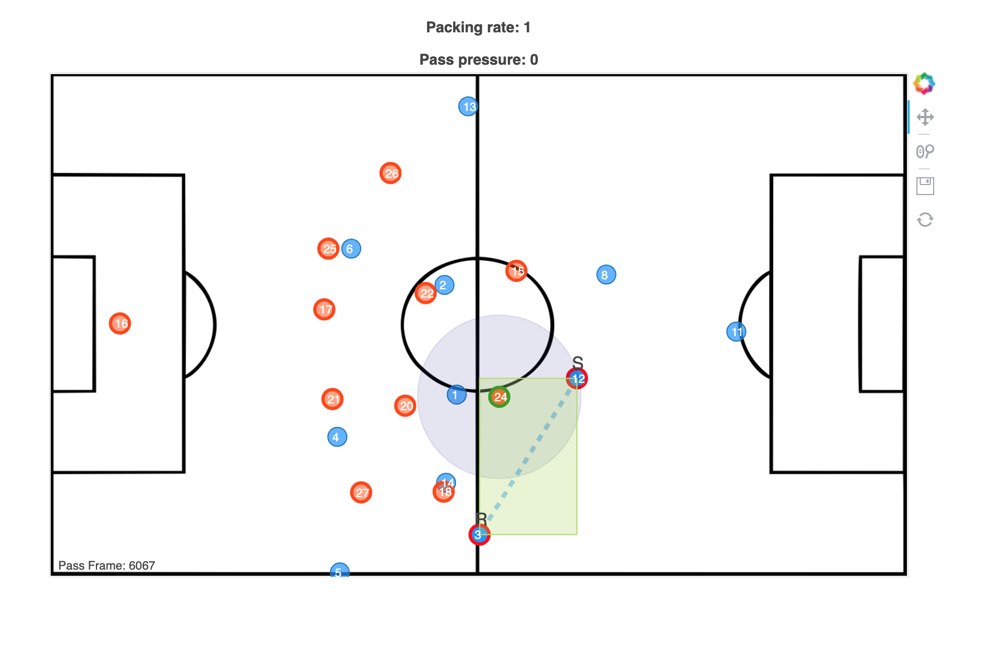

Usage & Examples¶
Usage¶
Get packing rate¶
The documentation can be found under modules.
import football_packing as fp
pack = fp.packing(sender_xy, receiver_xy, def_team_xy_df,
col_label_x='defender_team_x', col_label_y='defender_team_y',
defend_side='left')
packing_df, packing_rate, pass_pressure = pack.get_packing()
Plot packing¶
The documentation can be found under modules.
import football_packing as fp
plot = plot_packing(passer_team_df=passing_team_xy, packing_df=packing_df,
col_label_x='defender_team_x', col_label_y='defender_team_y',
packing_rate=packing_rate, pass_pressure=pass_pressure,
sender_xy=sender_xy, receiver_xy=receiver_xy,
x_range=[-5250, 5250], y_range=[3400, -3400],
path_to_save=dir_path+'/', pass_frame=self.play_id, file_name='belgium',
bcg_img='/images/pitch/pitch.jpg')
plot.plot()
Examples¶
There are 2 examples present in Examples folder under the main football_packing folder .
belgium.py¶
(Data Source: GitHub)
Run the belgium.py from the examples folder. A html file, belgium.html,
with the plot will be saved in the same folder and plot will also open on browser.
metrica.py¶
(Data Source: GitHub)
To run the metrica.py from the examples folder you would have to provide 2 arguments. First one is the path
to the game level data and the second argument is the path to the event level data.
Use this tidy data - Credit - Eliot McKinley
for the game level data and the events data can be downloaded from the Metrica GitHub page.
The sample command to run the file would be like below:
python3 .../metrica.py .../metrica_tracking_tidy.csv .../Sample_Game_1_RawEventsData.csv
If you’re using Conda, the python3 argument would be replaced with something like this
/Users/{user_name}/opt/anaconda3/bin/python on a mac.
Sample Scenarios¶
Scenario 1:¶
{kind=link}
Based on the calculation, players 15, 18 & 20 are the closest defenders to the line of pass.
Player 26 should also have been marked as +1 for packing, but looking from the perspective of the sender & receiver,
26 is still behind the receiver (figure below shows that 26 will intersect the pass after the pass in extended beyond
receiver.
{kind=link}
If you’d considered the defender’s lines to be vertical, then 26 would be considered.
Scenario 2:¶
{kind=link}
In this scenario, defender 24 satisfies all the conditions. Defender 18 satisfies 2 of the conditions (method 2 & 3) but fails the first condition where the player is too far beyond the scope of the pass (green rectangle). The blue circle on player 24 shows his distance to the pass breaking the line of pass. |
Scenario 3:¶

One of the reason side passes were also included is to consider the fact that not all side passes are bad (some might still lead to a goal scoring chance). In this scenario, the packing is 0.5/player. Although, the scope fo the pass (rectangle box) is small, having that threshold would include defenders who could be on the edges of the box (seen below).
{kind=link}
Note
This is still a work in progress as there are certain edge cases where packing rate could be incorrect. Please leave a feedback/comment on Twitter/GitHub if you encounter any errors.